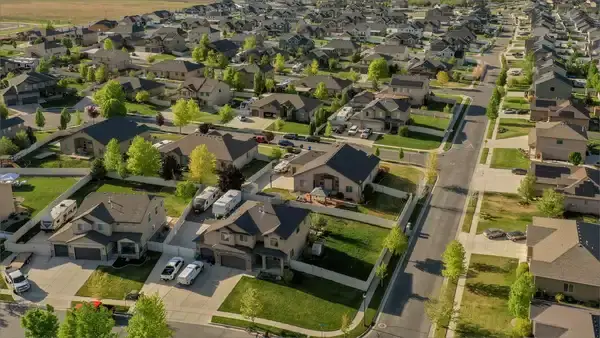
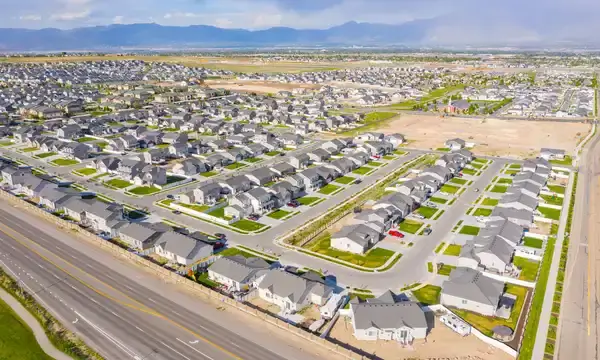

Fun Facts
- Over the years, West Jordan has experienced significant population growth. It is one of the fastest-growing cities in Utah and has become one of the largest suburbs of Salt Lake City.
- The city is known for its access to outdoor recreational activities. It's close to the Oquirrh Mountains, offering opportunities for hiking, biking, and other outdoor adventures.
- West Jordan is part of the extensive Jordan River Parkway trail system, providing residents and visitors with opportunities for walking, jogging, and enjoying nature along the river.
- In recent years, West Jordan has seen significant economic development, including the construction of new residential communities, shopping centers, and business parks.
- This historic shopping area in West Jordan is a popular tourist destination. It features restored buildings from the 19th century, housing boutique shops, restaurants, and attractions.
Current Population
As of 2022, the population of West Jordan, UT is at 116,664
If you wish to know more demographic information about West Jordan, please visit:
Data Commons for West Jordan, UTLocal Attractions
Gardner Village
Jordan Landing
Jordan River Parkway
Veterans Memorial Park
The Conservation Garden Park

